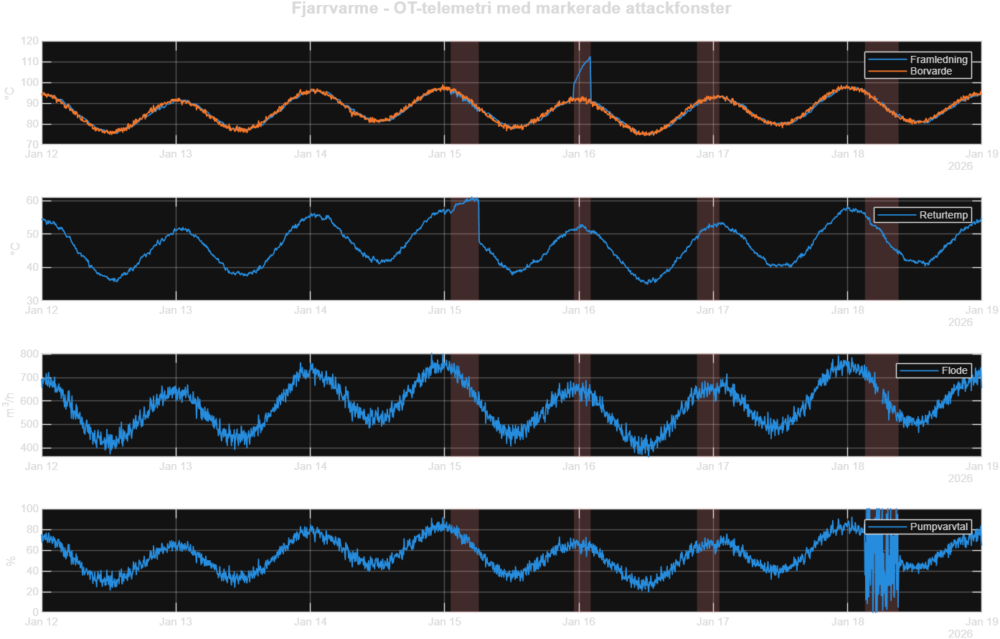
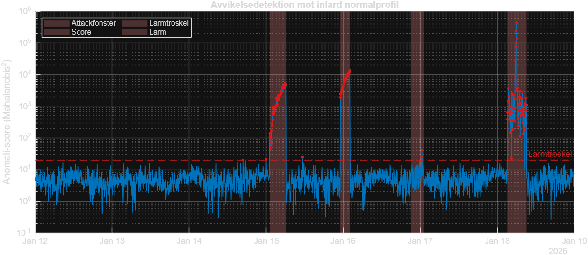
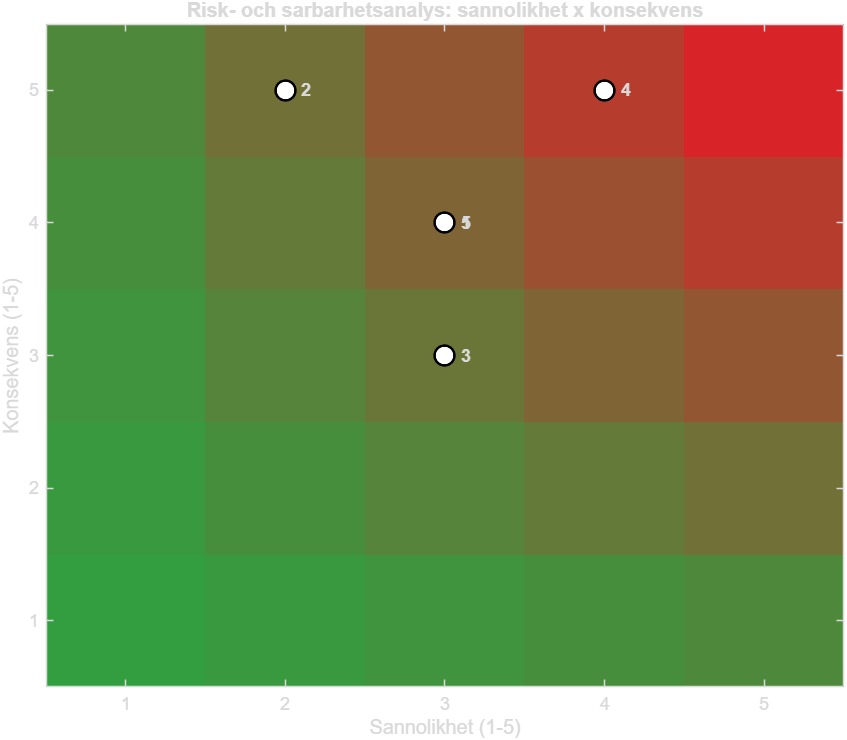

Systemet larmar normala fjarrvarmedrift fran en ren baslinjeperiod och larmar darefter på avvikelser: multivariata avvikelser (Mahalanobis-avstånd), brutna fysikaliska samband (t.ex. givarförfalskning) och forlorad telemetri (tillgänglighet). Metodiken motsvarar en strukturerad risk- och sarbarhetsanalys samt kontinuerlig overvakning enligt NIST CSF 2.0 och kraven i NIS2/cybersakerhetslagen.


Detektionskvalitet mot facit: recall 78%, precision 98%, F1 0.87.
| # | Scenario | CSF | Allvar | Detektionstid | Tidig varning (24h) | Anmälan (72h) | Slutrapport (1 man) | Status |
|---|---|---|---|---|---|---|---|---|
| 1 | Sensor spoofing (false data injection) | DE.AE / PR.DS | 4/5 | 2026-01-15 01:05 | 2026-01-16 01:05 | 2026-01-18 01:05 | 2026-02-15 01:05 | Detekterad |
| 2 | Command injection (andrat borvarde) | RS.MA / PR.AA | 5/5 | 2026-01-15 23:05 | 2026-01-16 23:05 | 2026-01-18 23:05 | 2026-02-15 23:05 | Detekterad |
| 3 | Replay attack (uppspelning av historik) | DE.CM / PR.AA | 3/5 | 2026-01-16 21:05 | 2026-01-17 21:05 | 2026-01-19 21:05 | 2026-02-16 21:05 | Detekterad |
| 4 | Ransomware-like OT disruption | RC.RP / DE.CM | 5/5 | 2026-01-18 03:05 | 2026-01-19 03:05 | 2026-01-21 03:05 | 2026-02-18 03:05 | Detekterad |
NIS2/cybersäkerhetslagen: tidig varning inom 24 timmar, incidentanmälan inom 72 timmar och slutrapport inom en månad till MSB for vasentlig verksamhet.

| # | Scenario | CSF | Sannolikhet | Konsekvens | Riskvarde |
|---|---|---|---|---|---|
| 1 | Sensor spoofing | DE.AE | 3 | 4 | 12 |
| 2 | Command injection | RS.MA | 2 | 5 | 10 |
| 3 | Replay attack | DE.CM | 3 | 3 | 9 |
| 4 | Ransomware-like OT disruption | RC.RP | 4 | 5 | 20 |
| 5 | Supply-chain / vendor compromise | GV.SC | 3 | 4 | 12 |
| Funktion | Hur projektet adresserar den |
|---|---|
| GOVERN | Riskaptit och prioritering via risk-/sarbarhetsanalysen; leverantorsrisk (GV.SC). |
| IDENTIFY | Tillgangs- och dataflodeskartlaggning (IT/OT), riskbedomning per scenario. |
| PROTECT | Rekommendationer: segmentering IT/OT, MFA, harden styrsystem, immutable backup. |
| DETECT | Kontinuerlig overvakning och avvikelsedetektion (denna monitor). |
| RESPOND | Incidentklassning, allvarsgrad och NIS2-rapporteringsfrister. |
| RECOVER | Atgardsforslag och kontinuitet vid tillganglighetsstorning. |
Obs: syntetisk data for demonstration. Modellen ar forenklad och visar metodik och arbetssatt.